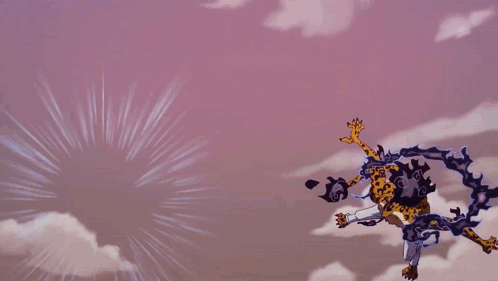

Rokushiki consists of six basic techniques and a secret seventh technique that only a true master of Rokushiki can achieve. Furthermore, most of the users have displayed their own variations and derived techniques, allowing them to increase their versatility and originality. Also, certain users tend to be more specialized in one technique, such as Fukurou with Soru, Jabra with Tekkai, Kaku with Rankyaku, or Rob Lucci and Who's-Who with Shigan.
According to Lucci, those who mastered the Rokushiki will have the strength of a hundred men. The overall strength of a Rokushiki user is measured by Doriki, which Fukurou can measure by using his "Te-awase." The higher the level, the stronger each technique's potency becomes. The Doriki measurement doesn't take devil fruit powers into account though.

Rokushiki is the main style of combat for the World Government's Cipher Pol agents, in particular, CP9 and CP0. Some of the Marines have demonstrated its usage as well; Koby used Soru against Monkey D. Luffy, Vice Admirals Momonga and Dalmatian used it to confront Luffy at Marineford, Momonga also used Geppo against Luffy, and Dalmatian also used Shigan against Luffy, Vice Admiral Vergo used it on several G-5 marines on Punk Hazard, and Captain Tashigi used it during her confrontation against Monet. The (non-canon) former Marines Z and Binz are Rokushiki users, with Z being able to master it and Binz seen using at least Soru. It is unknown exactly how much Rokushiki is spread around the Marines and how widely known techniques are, but it seems the most commonly known technique is Soru.
Outside of the Marines, there are also others who learned the Rokushiki techniques, or adapt their principles to create their own, similar techniques. The (non-canon) World Government hating pirate Byrnndi World was somehow able to learn the Soru and Geppo techniques. Monkey D. Luffy utilized his Gear 2 mode to grasp the concepts of Soru, gaining an advanced version of it, while Sanji gained an advanced variant of Geppo that he can utilize both in midair and underwater.
